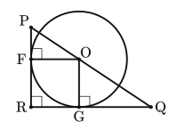

9.6점그림과 같이 ∠PRQ=90∘\displaystyle \angle \mathrm{PRQ}=90^\circ∠PRQ=90∘인 직각삼각형 PQR\displaystyle \mathrm{PQR}PQR에서 원 O\displaystyle \mathrm{O}O의 중심은 빗변 PQ\displaystyle \mathrm{PQ}PQ 위에 있다. 이 원은 두 변 RP\displaystyle \mathrm{RP}RP, RQ\displaystyle \mathrm{RQ}RQ에 각각 F\displaystyle \mathrm{F}F, G\displaystyle \mathrm{G}G에서 접한다. 원의 반지름의 길이가 3 cm\displaystyle 3\,\mathrm{cm}3cm이고 RP‾=5 cm\displaystyle \overline{\mathrm{RP}}=5\,\mathrm{cm}RP=5cm일 때, 선분 RQ\displaystyle \mathrm{RQ}RQ의 길이는?①7 cm\displaystyle 7\,\mathrm{cm}7cm②152 cm\displaystyle \dfrac{15}{2}\,\mathrm{cm}215cm③8 cm\displaystyle 8\,\mathrm{cm}8cm④172 cm\displaystyle \dfrac{17}{2}\,\mathrm{cm}217cm⑤9 cm\displaystyle 9\,\mathrm{cm}9cm